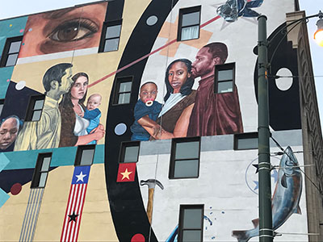
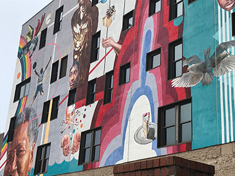

Redbirds Stadium Mural on Madison
Also located on Madison Avenue, this mural was done a few years back by local Memphis artists. The mural resembles a collage in that it features different things, like families, cakes, fish and birds. This mural contains the most realistic depiction of everyday life, with features reminiscent of a portrait.